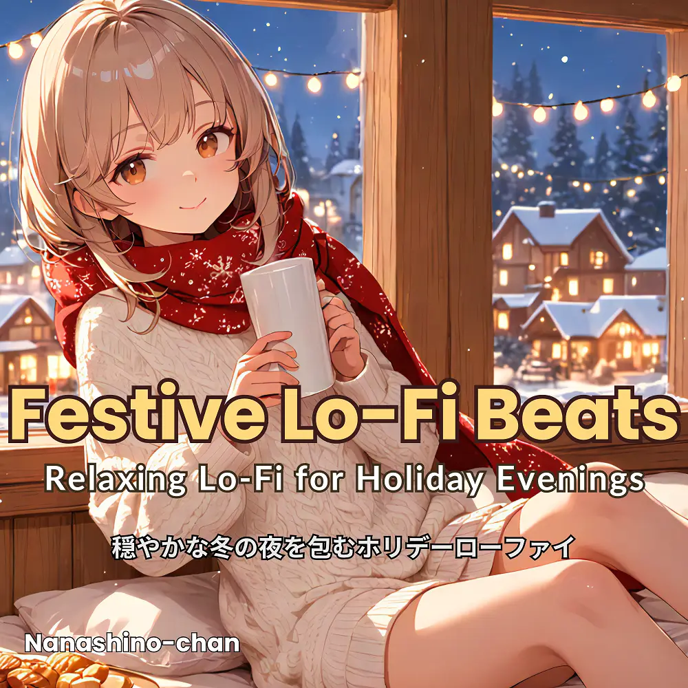

Lo-Fi · Chillhop
Festive Lo-Fi Beats:Cozy Holiday Chillhop for Winter Nights
Nanashino-chan
Explore Festive Lo-Fi Beats:Cozy Holiday Chillhop for Winter Nights by Nanashino-chan: 19 instrumental tracks spanning Lo-Fi / Chillhop. Start with Mistletoe Memories / Chill by the Fireplace, preview the collection and find your favorites on streaming services.
2025-12-16 · Released · 19 tracks · Instrumental
Preview the album
The jacket stays here until you choose a track. Playback uses YouTube.
YOUTUBE PREVIEW
Choose a track to listen
The jacket stays here until you choose a track. Playback uses YouTube.
If playback is unavailable, open the album or track on the streaming service.
Find this album on streaming services
Links marked “search” open search results. Select the album or track on the service.
Track list 19
- 01Mistletoe Memories
- 02Chill by the Fireplace
- 03Gingerbread Groove
- 04Peaceful December
- 05Winter Chill
- 06Festive Reflections
- 07Sugarplum Dreams
- 08Twinkling Lights
- 09Jingle Lo-Fi
- 10Holiday Whispers
- 11Yuletide Vibes
- 12Chestnut Chill
- 13Warm Cocoa Beats
- 14Winter Reverie
- 15Frozen Melodies
- 16Holiday Hues
- 17Dreamy December
- 18Chill Tidings
- 19New Year Glow
Find a sound for your next post
Copy “Nanashino-chan + track title” and paste it into your social app’s music search. Availability depends on your region and account. Copying the name does not grant usage rights.